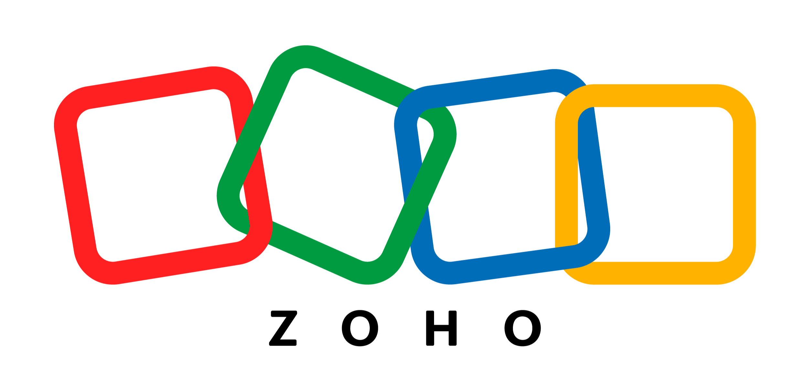

Claude for Small Business에 이제 43개의 워크플로(workflow)와, Shopify·Salesforce·TikTok·Atlassian·Zoom·Xero·Gusto·Square·Stripe·Zapier 등 소상공인이 이미 쓰고 있는 도구와의 새 통합(integration) 27개가 들어 있습니다. 새 워크플로는 Claude의 역할을 백오피스 운영에서 사업 성장으로 넓히며, 시작에 도움이 필요한 사업주를 위한 가을 무료 오프라인 워크숍과 파트너 웨비나 일정도 함께 공개됩니다.
우리는 지난 5월 Claude for Small Business를 출시했습니다. 사업주가 의존하는 도구 안에 Claude를 넣어 주는 커넥터(connector)와 바로 실행할 수 있는 워크플로 묶음이었습니다. 이후 설치 횟수는 90만 회를 넘었습니다. 처음부터 함께해 주었고 지금도 함께하는 파트너 Intuit QuickBooks, PayPal, HubSpot, Canva, Docusign, Google Workspace, Microsoft 365에 감사드립니다. 봄에 진행한 Claude SMB 투어에서는 10개 도시의 1,000명 넘는 사업주가 Claude가 다음에 맡아 주길 바라는 일을 직접 들려주었습니다. 약 3분의 1은 리드(lead) 생성, 인바운드 문의 응대, 제안서 작성 같은 사업 성장 지원을 요청했습니다. 일상적인 보고 업무를 대신 처리해 주길 바라는 분들도 많았습니다. 이번 릴리스는 그 요청들을 중심으로 만들었습니다.
투어는 이번 가을 미국 10개 도시의 무료 워크숍으로 돌아옵니다. 공인 Claude SMB 트레이너(Approved Claude SMB Trainer)로 교육받은 150개 이상의 조직이 각자의 지역 사회에서 750회 넘는 워크숍을 열고, 14개 통합 파트너가 자사 커넥터를 다루는 무료 웨비나를 진행합니다.
Claude SMB 투어 첫 일정에서 소상공인 리더들이 우리에게 들려준 이야기입니다.
“예전에 120시간 걸리던 일이 이제 5분이면 끝납니다. 시간이 너무 많이 남아서 이제는 가족과 더 많은 시간을 보내고, 좋아하는 일을 하고, 늘 미뤄 두었던 사업의 다른 부분에도 손을 대고 있습니다.”
— Pedro Rubio, Blackfyre GovCon 창립자 겸 CEO, 워싱턴 D.C.
“저는 Claude를 소상공인을 위한 평준화 도구(equalizer)라고 봅니다. 이제 100명, 200명 규모 회사가 하는 일을 우리도 할 수 있습니다. 40명 규모로 성장 중인 우리에게는 그렇게 되찾은 시간을 고객과 조직 문화에 쓰는 것이죠.”
— Cara Roellgen, KBSO Consulting 전략·혁신 디렉터, 인디애나주 카멜
“매일 아침 6시에 CRM을 훑어서 할 일 목록을 전부 가져오고, 우선순위를 매긴 뒤, ‘오늘 해야 할 일과 가장 중요한 우선순위는 이것’이라는 이메일을 보내 줍니다. 우리는 이걸 ‘데일리 브리핑’이라고 부릅니다.”
— Garrett French, Driller Design Co. 대표, 오클라호마주 털사
“지난 한 달 반 동안 Claude로 전문적인 제안서를 만들어 2만 달러를 벌었습니다. 그게 사업을 따오는 일이고, 실제로 제 통장에 돈이 들어왔습니다. 어떻습니까?”
— Dan Ninerell, Modern Classical Chefs 창립자, 뉴저지주 사우스저지
“우리는 [Claude에게] 최종 목표가 무엇인지 말해 줍니다. 그러면 가서 테스트를 하고, 90%는 제대로 해냅니다. 우리는 5명짜리 회사인데, 이걸로 꽤 많은 일을 해냈다고 생각합니다.”
— Bill Hood, TruckingMBA 공동 창립자, 테네시주 채터누가
“우리에게 가장 도움이 되는 건 통합입니다. 우리는 Slack을 쓰는데, Slack으로 Claude와 대화합니다. Intuit QuickBooks와도 연동됩니다. 우리가 여기저기서 정보 조각을 찾아다닐 필요 없이 모든 곳에서 모든 것을 끌어와 줍니다. 전부 한곳에 있는 거죠.”
— Kati Jo Hodges, Premier Geotech and Testing 운영 디렉터, 루이지애나주 배턴루지
Claude for Small Business와 함께하는 한 주
오늘날 소상공인들이 실제로 Claude를 쓰는 방식에서 영감을 받아, Claude로 사업을 운영하고 키우는 사업주의 한 주를 그려 보았습니다.
SUN01
일요일 저녁 8시
설치와 온보딩
Claude for Small Business는 Claude가 파일과 연결된 도구를 직접 다루는 데스크톱 앱, Claude Cowork에서 실행됩니다. 플러그인을 설치하고 Claude에게 “설정을 도와줘(help me get set up)”라고 말하거나 /smb-onboard를 실행한 뒤, 이미 쓰는 도구를 연결하고 작업을 하나 고르면 됩니다. 플러그인은 각 워크플로를 원하는 일정에 맞춰 실행되도록 설정할 수도 있습니다.
주도권은 당신에게기본적으로 Claude는 작업을 해 두고, 무언가를 보내거나 게시하거나 결제하기 전에 당신의 승인을 기다립니다.
실행하기
말하기“help me get set up”
또는 입력/smb-onboard
MON02
월요일 아침 7시
주간 브리프
현금 상황, 지난주 매출과 그 전주 비교, 파이프라인에서 움직인 것, 연체된 청구서, 그리고 이번 주에 당신의 손이 꼭 필요한 세 가지. 스프레드시트를 열기도 전에 이 모든 것이 한 페이지에 정리되어 있습니다.
실행하기
말하기“give me my Monday brief”
또는 입력/monday-brief
설정 중에 “weekly”로 지정하면 매주 월요일 같은 시각에 실행되며, 아티팩트(artifact)나 웹사이트 형태의 상시 대시보드로 내보내는 옵션도 있습니다.
함께 쓰는 도구커넥터 37개
37개 파트너 커넥터 모두 사용할 수 있습니다.
Airwallex
Apollo
Atlassian
Canva
Clay
Docusign
Emergent
Expensify
Gmail
Google Calendar
Google Drive
Gusto
HubSpot
Intuit Mailchimp
Intuit QuickBooks
Microsoft 365
monday.com
MYOB
NetSuite
Notion
PayPal
Ramp
RingCentral
Salesforce
Shopify
Slack
Square
Stripe
TikTok Ads
Trello
Wix
Xero
Zapier
Zoho Books
Zoho CRM
Zoho Desk
Zoom
커넥터가 없다면? 스프레드시트를 업로드하면 Claude가 공유한 자료만으로 브리프와 보고서를 만들어 줍니다.
사업주 이야기
Mothership Coffee Roasters
Juanny Romero, 창립자 겸 CEO · 라스베이거스
22%매장 마진. 더 촘촘해진 근무 편성·발주·재고 보고 덕이 크다고 평가
6개 카페를 하나의 통합 뷰에서 운영
Mothership Coffee Roasters의 창립자 겸 CEO Juanny Romero는 라스베이거스에서 카페 6곳과 도매·케이터링 사업을 운영합니다. 숫자는 POS, Intuit QuickBooks, Slack, 이메일에 흩어져 있었고 주 단위로 한눈에 보는 화면이 없었습니다. 이들을 Claude에 연결하고, Claude를 경영진의 예측·주간 계획 작업 공간으로 삼은 뒤, 지금은 6개 매장 전부를 하나의 통합 뷰에서 운영합니다. 매장 마진은 22%로 올랐는데, 더 촘촘해진 근무 편성·발주·재고 보고 덕이 크다고 그는 말합니다.
영업이 끝난 뒤 웹사이트, 이메일, 채팅으로 케이터링 문의가 들어옵니다. Claude가 문의를 선별하고, 캘린더에서 실제로 비어 있는 시간 두 개를 담아 답장 초안을 쓰고, CRM에 기록합니다. 이 워크플로를 자동으로 돌리도록 허용해 두었다면 화요일 아침에 이미 예약이 잡혀 있는 것을 보게 되고, 그렇지 않다면 답장이 당신의 승인을 기다리고 있습니다.
실행하기
말하기“answer new leads as they come in”
또는 입력/speed-to-lead
당신이 정한 일정으로 돌아가는 상시 워크플로입니다.
함께 쓰는 도구커넥터 15개
Apollo
Clay
Emergent
Gmail
Google Calendar
HubSpot
Intuit Mailchimp
Microsoft 365
monday.com
Notion
RingCentral
Salesforce
Trello
Zoho CRM
Zoom
커넥터가 없다면? 문의를 Claude에게 전달하면 직접 보낼 수 있는 답장 초안을 받을 수 있고, Claude가 스프레드시트 CRM에 리드를 관리해 줍니다.
사업주 이야기
Bambi Baby
Josh Weiss, COO
$60,000도구 도입 첫 4일간 이 도구에서 비롯된 매출
18%파일럿 2주 차에 온라인 매출 중 매장 방문에서 새로 기인한 비율
가족이 운영하는 유아차·카시트 소매점 Bambi Baby에서는 매장 방문객 4명 중 3명이 이름이나 이메일을 남기지 않고 떠났습니다. 개발자가 아닌 COO Josh Weiss는 Claude로 ‘스캔해서 위시리스트에 담기’ 방식의 리드 수집 도구와 그 뒤의 후속 연락 흐름을 만들었습니다. 도구 도입 첫 4일 동안 6만 달러의 매출이 이 도구에서 비롯되었습니다. 두 매장에서 파일럿을 시작한 지 2주 만에 온라인 매출의 18%가 매장 방문에서 새로 기인한 것으로 집계되었습니다.
현장을 둘러본 뒤 사무실로 돌아오는 길에 2분짜리 음성 메모를 녹음합니다. 자리에 앉을 때쯤이면 과거 작업을 바탕으로 견적이 매겨진 브랜드 제안서가 수정을 기다리고 있습니다. 승인하면 서명을 받으러 발송됩니다.
실행하기
말하기“turn this into a proposal”
또는 입력/proposal-builder
먼저 메모, 사진, RFP(제안요청서)를 첨부하거나 통화 녹취록을 불러옵니다.
함께 쓰는 도구커넥터 17개
Apollo
Atlassian Confluence
Canva
Docusign
Google Drive
Microsoft 365
MYOB
NetSuite
Notion
PayPal
Intuit QuickBooks
Square
Stripe
Trello
Xero
Zoho Books
Zoom
커넥터가 없다면? 메모, 사진, 그리고 템플릿으로 삼을 과거 제안서를 업로드하면 Claude가 그것을 바탕으로 제안서를 만들고 견적을 매깁니다. 서명 요청은 직접 보내면 됩니다.
사업주 이야기
KANE
Michael Kazantzis, Joni Kazantzis, 공동 창립자 · 뉴저지주 프린스턴
몇 주 → 몇 분거래 범위 산정부터 서명용 작업기술서(SOW) 발송까지
뉴저지주 프린스턴의 크리에이티브·성장 에이전시 KANE은 거래 하나마다 범위 산정, 견적, 제안서 작성, 계약에 몇 주씩 쓰곤 했습니다. 공동 창립자 Michael Kazantzis와 Joni Kazantzis는 회의 노트에서 적합도를 점수화하고, 자사의 과거 프로젝트를 바탕으로 견적을 내고, 제안서 초안을 쓰고, 고객이 승낙하면 몇 분 안에 작업기술서를 서명용으로 내보내는 Claude 파이프라인을 만들었습니다. “몇 주씩 걸리던 프로세스 전체가 이제 하루 중 몇 분 안에 거의 끝납니다. 고객들도 그걸 알아차릴 정도예요.” Michael Kazantzis의 말입니다.
다음 주 게시물이 당신의 목소리로, 브랜드에 맞는 그래픽과 함께 초안으로 작성되고, 각 채널에 필요한 모든 형식으로 잘려서 승인 대기 상태로 준비됩니다. 지난주 채널별 매출은 마케팅 성과와 함께 한 페이지에 정리되고, 이번 주 새 리뷰에는 답글 초안이 달려 당신의 승인을 기다립니다.
실행하기
말하기“plan next week's content”
또는 입력/social-content-engine
게시 캘린더를 계속 채워 둡니다.
숫자와 리뷰는 주간 일정으로 실행됩니다.
입력/marketing-monday
함께 쓰는 도구커넥터 16개
Apollo
Canva
Clay
Gmail
HubSpot
Intuit Mailchimp
monday.com
Notion
PayPal
Shopify
Square
Stripe
TikTok
Trello
Zoho CRM
Zoho Desk
커넥터가 없다면? Claude가 캘린더, 캡션, 디자인 브리프 초안을 쓰고, 내보낸 매출 자료와 붙여 넣은 리뷰로 주간 페이지를 만들어 줍니다.
사업주 이야기
Rebel Cheese
Kirsten Maitland, 공동 창립자 겸 CEO · 오스틴
공동 창립자 겸 CEO Kirsten Maitland가 세운 Rebel Cheese는 오스틴의 식물성 치즈 제조사로, 레스토랑 한 곳에서 시작해 Shark Tank 출연 뒤 전국 단위 이커머스 사업으로 성장했습니다. 브랜드의 목소리는 그의 머릿속에만 있어서 본인의 근무 시간 이상으로 확장될 수 없었습니다. 데이터 보안 측면에서 Claude를 검증한 뒤, 그는 자신의 글로 보이스 스킬(voice skill)을 학습시키고 이메일과 소셜 도구에 연결했습니다. 이제 팀원이 모든 문장을 창립자에게 거치지 않고도 브랜드에 맞는 캠페인 초안을 씁니다. “저는 Claude 안에서 삽니다. 수요를 따라잡으려고 컴퓨터 두 대에서 여러 인스턴스를 동시에 돌리고 있어요.” 그의 말입니다.
Claude가 매출 정산, 카드 지출, 급여 등 돈이 오가는 모든 곳과 장부를 대사합니다. 불일치를 거래 건 단위까지 짚어내고, 쉬운 말로 쓴 손익계산서(P&L)를 작성하고, 회계사에게 넘길 마감 패킷을 만듭니다. POS에 커넥터가 없어서 어떤 계정이 끝내 깔끔하게 맞지 않는다면, Claude가 Zapier를 통해 연결하거나 커넥터를 직접 만들며, 담당 회계 직원이 손으로 하던 조정은 다음 달 마감의 저장된 단계가 됩니다.
실행하기
말하기“close September”
또는 입력/close-month
빈틈이 있을 때
말하기“connect my POS”
또는 입력/build-connector
말하기“make this part of the close”
또는 입력/build-agent
함께 쓰는 도구커넥터 14개
Expensify
Google Drive
Gusto
MYOB
NetSuite
PayPal
Intuit QuickBooks
Ramp
Shopify
Square
Stripe
Xero
Zapier
Zoho Books
커넥터가 없다면? 은행과 결제 처리사 명세서를 업로드하면 Claude가 그것을 바탕으로 마감합니다.
사업주 이야기
HireEffect
Chris Scott, COO · Jennifer Scott, 창립자 겸 CEO · 댈러스
16건. 1만 3천 달러 불일치의 원인으로 골라낸 거래
10초예전에는 2시간 걸리던 월간 보고 작업
전국의 소상공인을 위해 회계, 급여, 인사 업무를 대행하는 댈러스의 HireEffect에는 2년 반치 장부와 수만 건의 PayPal 거래 속에 1만 3천 달러의 불일치가 묻혀 있는 고객이 있었습니다. COO Chris Scott은 Claude로 원인이 된 정확히 16건의 거래를 골라냈습니다. “말 그대로 건초더미에서 바늘 찾기였어요. 이게 없었다면 절대 못 찾았을 겁니다.” 창립자 겸 CEO Jennifer Scott의 말입니다.
이들은 또 QuickBooks와 CRM을 포함한 서로 다른 5개 시스템을 아우르는 통제된 보고 대시보드를 만들어, 2시간 걸리던 월간 작업을 10초로 줄였습니다. 회계 디렉터는 고객 손익계산서를 논의 포인트가 미리 표시된 시각 요약으로 바꿔 주는 자신만의 스킬을 직접 만들었습니다.
원문에서는 아래 파트너 인용이 슬라이더(carousel)로 표시됩니다. 여기서는 카드로 펼쳐 놓았습니다.
“Claude for Small Business 안의 Shopify로, 판매자는 한 주를 계획하는 바로 그곳에서 상점을 운영합니다. 실시간 매출과 재고를 보고, 베스트셀러가 품절되기 전에 재발주 초안을 받고, 상품 카탈로그를 다음 주 캠페인으로 바꿉니다. 반복 업무가 손을 떠나니 성장에 집중할 수 있습니다.”
Archie Abrams, 제품 부사장(VP Product)
“Claude for Small Business 안의 Stripe로, 우리는 소상공인이 현금 흐름 모니터링과 청구서 후속 조치부터 새로운 성장 기회 발굴까지 일상적인 재무 업무를 더 많이 위임하면서도 모든 결정의 주도권은 계속 쥘 수 있도록 돕고 있습니다.”
Maia Josebachvili, AI 최고매출책임자(Chief Revenue Officer of AI)
“소상공인을 운영한다는 것은 대화를 끊임없이 일로 옮기는 것입니다. CRM을 업데이트하고, 프로젝트를 시작하고, 청구서를 내보내는 일이죠. Claude for Small Business 안의 Zoom과 Bonsai로, Zoom이 오간 말을 담아내고 Bonsai가 그것을 사업주의 승인만 남은 일로 바꿉니다. 사업주는 통화 요약이 아니라 후속 실행을 얻습니다.”
Ross Mayfield, AI 파트너십 제품 총괄(Head of Product, AI Partnerships)
“소상공인이라면 급여와 규정 준수는 매번 정확해야 하고, 거기에 이르기까지 사업에 쓰고 싶은 시간이 몇 시간씩 잡아먹힌다는 걸 잘 아실 겁니다. 이제 Claude for Small Business가 Gusto와 함께 그 준비를 처리합니다. 급여 지급을 감당할 현금이 있는지 확인하고, 근무 시간을 가져오고, 이상한 점을 표시하고, 실행 대기 상태로 올려 둡니다. 어떤 조치든 실행되기 전에 검토하고 승인하는 것은 여전히 당신입니다.”
Chris Cosgrove, 제품 총괄(Head of Product)
“소상공인 사업주는 온갖 역할을 다 맡는데, 일을 정리하는 역할이 가장 무거울 때가 많습니다. Claude for Small Business 안의 Jira, Confluence, Loom, Trello로 그 무게가 덜어집니다. Claude와 Atlassian 커넥터가 한 주를 계획하고, 캠페인을 추적하고, 사업주가 반복하는 작업을 다시 만들 필요 없는 워크플로로 바꿉니다. 그 시간은 고객과 함께 쓰는 편이 낫죠.”
Tamar Yehoshua, 최고제품·AI책임자(Chief Product and AI Officer)
“TikTok은 언제나 규모에 상관없이 어떤 사업이든 창의성과 발견을 실제 성장으로 바꿀 수 있는 곳이었습니다. TikTok 비즈니스 도구가 Claude for Small Business에 통합되면서, 사업주는 한 번의 대화로 아이디어에서 실제 집행되는 TikTok 캠페인까지 가고, 캠페인이 어떤 성과를 냈는지 이해하고, 다음에 어디에 어떻게 더 힘을 실을지 알 수 있습니다.”
David Kaufman, 글로벌 수익화 제품 파트너십 총괄(Global Head of Monetization Product Partnerships)
“Xero는 소상공인과 그들의 회계사가 어디에서 일하든 신뢰할 수 있는 재무 데이터를 전하는 데 집중합니다. Claude for Small Business 안의 Xero로, 사업주는 대화 안에서 바로 자신의 숫자에 대한 실시간 단일 정보원(source of truth)을 갖게 되어, 더 잘 알고 결정하고 자문가와 더 깊은 대화를 나눌 수 있습니다.”
Akankshu Dhawan, 제품·기술 수석부사장(SVP Product and Tech)
“소상공인에게 필요한 것은 더 많은 도구가 아니라 더 많은 시간, 더 많은 리드, 그리고 그 일이 실제로 성과를 움직이고 있다는 더 큰 확신입니다. Claude for Small Business 안의 HubSpot으로 모든 새 리드가 응답되고, 후속 조치되고, CRM에 기록되므로 사업주는 운영이 아니라 고객에 집중할 수 있습니다.”
Kipp Bodnar, 최고마케팅책임자(Chief Marketing Officer)
“소상공인에게 아웃바운드의 어려운 부분은 누구에게 연락해야 하고 그들이 왜 관심을 가질지 아는 것입니다. Clay는 Claude for Small Business 안에서 그 숙제를 대신합니다. 잠재 고객을 찾고, 당신의 최고 고객들과 비교해 점수를 매기고, 무엇으로 말문을 열지 알려 줍니다. 누구에게 연락할지는 사업주가 결정합니다.”
Kareem Amin, 공동 창립자 겸 CEO
“소상공인은 거대한 기술 팀을 가진 대기업과 경쟁하기 어려울 때가 많습니다. Claude for Small Business 안의 Zapier로 우리는 그 격차를 줄이도록 돕습니다. 사업주는 네이티브 커넥터가 없는 앱을 포함해 이미 쓰는 앱들을 연결하고, 그 워크플로를 실제로 돌릴 수 있습니다.”
Dan Slagen, 최고마케팅·AI전환책임자(Chief Marketing and AI Transformation Officer)
“영수증, 경비 정산, 카드 명세서는 소상공인의 장부가 무너지는 지점입니다. Claude for Small Business 안의 Expensify는 거래가 들어오는 순간 코드를 붙이고 대조하며, 정책을 벗어난 것을 문제가 되기 전에 잡아내고, 월말에 바로 마감할 수 있는 장부를 건네줍니다. 비즈니스 재무는 스프레드시트가 아니라 대화가 되어 가고 있습니다. 바로 이런 모습입니다.”
Nick Tooker, 파트너십 총괄(Head of Partnerships)

“많은 소상공인이 이미 영업, 재무, 고객 지원을 Zoho에서 운영합니다. Claude for Small Business 안의 Zoho CRM, Zoho Books, Zoho Desk로, 사업주는 질문 하나로 세 시스템을 모두 아우르는 답을 얻습니다. 어떤 거래가 정체되어 있는지, 어떤 청구서가 연체인지, 오늘 답해야 할 티켓은 무엇인지. 그만큼 고객을 돌보고 꿈꾸던 사업을 만드는 데 더 많은 시간을 쓸 수 있습니다.”
Anand Nergunam, 매출 성장 글로벌 부사장(Global Vice President, Revenue Growth)
“회의 후 액션 아이템, 전화할 리드 선별, 월말 마감에서 드러난 것들. Claude는 팀이 작업과 우선순위를 정하도록 돕지만, 그다음에는 누군가가 실제로 그것을 실행해야 합니다. Claude for Small Business의 monday.com 커넥터는 이 항목들 각각을 모든 맥락과 함께 보드에 올리고, 알맞은 담당자를 지정하고, 진행 상황을 추적해 팀 전체가 목표 달성을 확인할 수 있게 합니다.”
Sergei Liakhovetsky, 연구개발 부사장(VP R&D)
“소상공인은 대화로 돌아가고, 모든 통화·문자·채팅에는 사업주가 다시 찾아볼 시간이 없는 맥락이 담겨 있습니다. Claude for Small Business와 함께하는 RingCentral이 그것을 바꿉니다. 우리는 당신이 이미 일하는 곳에서 대화 데이터를 접근하고 활용할 수 있게 만들어, 상호작용의 맥락을 다음 단계로 바꿉니다. 영업시간 이후의 음성 메시지나 채팅 메시지는 아침이 되면 답장 초안이 붙은 검증된 리드가 되고, 갱신 통화 전에 고객의 전체 이력이 화면에 떠 있습니다. 모든 RingCentral 고객이 이것을 누립니다.”
Kira Makagon, 사장 겸 COO
“리드 생성, 아웃리치, 파이프라인 관리는 예전에는 GTM(go-to-market) 팀 전체가 필요한 일이었습니다. 이제 사업주는 누구에게 파는지 한 번만 설명하면, Claude for Small Business 안의 Apollo GTM 엔진이 순위가 매겨진 잠재 고객 목록을 만들고, 승인을 받을 아웃리치 초안을 쓰고, 파이프라인을 계속 채워 줍니다. 모두 한 번의 대화 안에서요.”
Matt Curl, CEO
“소상공인에게는 의도를 행동으로 바꿔 주는 AI가 필요합니다. 그래서 우리는 Wix의 웹사이트 빌더와 비즈니스 플랫폼을 Claude for Small Business에 가져옵니다. 사용자가 이미 일하고 있는 바로 그곳에서 웹사이트를 만들고 사업을 관리할 수 있도록요.”
Tuvit Rubin Kaplan, 개발자 플랫폼 총괄(Head of Developer Platform)
“이제 Airwallex가 Claude for Small Business에 통합되어, 사업주는 간단한 프롬프트만으로 결제를 받고, 해외 공급업체에 지급하기 위해 환전하고, 현금 흐름을 관리하는 등 훨씬 많은 일을 할 수 있습니다.”
Jason Gottlieb, 금융·전략 파트너십 부사장(VP of Financial & Strategic Partnerships)
“현금 흐름을 확인하든, 세금 신고를 준비하든, 성장을 계획하든, 모든 사업주에게는 자신이 다루는 숫자에 대한 확신이 필요합니다. Claude for Small Business 안의 MYOB는 사업체가 받는 인사이트와 조치가 이미 매일 의존하는 재무·운영 기록에 근거하도록 돕습니다. 그 결과는 호주와 뉴질랜드 사업체에 더 적절한 안내와 실질적인 지원을 제공할 수 있는 AI입니다.”
Yonatan Bley, 중소기업 제품·제품 마케팅 총괄(General Manager, SME Product and Product Marketing)
신뢰를 위한 설계
봄 투어에서 설문에 응한 사업주의 절반이 AI 사용을 주저하는 가장 큰 이유로 데이터 보안을 꼽았습니다. 통제 장치는 이렇게 작동합니다.
기본적으로 무엇을 언제 실행할지는 당신이 정합니다. 모든 워크플로는 승인 모드로 시작합니다. Claude가 작업 초안을 만들어 대기시킨 뒤 당신의 승인을 기다립니다. 어떤 워크플로가 익숙해지면 자동으로 실행되도록 허용할 수 있습니다. 이 선택은 워크플로 하나하나 따로 하며, 언제든 되돌릴 수 있습니다.
일부 워크플로는 마지막 단계 직전에서 멈춥니다. 예를 들어 Claude는 Gusto에서 급여를 실행 대기 상태로 준비만 하고, 제출은 당신이 합니다.
기존 소프트웨어의 권한은 그대로 유지됩니다. 직원이 지금 Intuit QuickBooks나 Google Drive에서 볼 수 없는 것은 Claude를 통해서도 볼 수 없습니다.
기본적으로 Team 및 Enterprise 플랜에서는 당신의 사업 데이터로 학습하지 않습니다.
몇 주 안에 공인 Claude SMB 트레이너가 주최하는 지역 사회 주도 Claude 워크숍도 발표할 예정입니다. 이 트레이너들은 올여름 샌프란시스코와 뉴욕에서 Tenex와 Anthropic이 연 전용 “Train the Trainer” 행사를 통해 교육을 받았습니다.
이번 가을에는 통합을 만든 기업들도 소상공인 사업주에게 이미 쓰고 있는 도구와 함께 Claude를 쓰는 법을 직접 가르칩니다. Claude for Small Business 파트너 웨비나 시리즈에서는 14개 기술 파트너가 9월 말부터 11월까지 각자의 커넥터를 다루는 무료 라이브 웨비나를 하나씩 엽니다. 각 세션은 그 커넥터가 Claude 안에서 무엇을 할 수 있는지, 도구와 Claude 사이에서 데이터가 어떻게 오가는지, 그리고 세션이 끝나기 전에 직접 실행해 볼 워크플로 하나를 다룹니다.
우리는 소상공인의 AI 도입이 경제 성장과 고용을 통해 상당한 공익을 낳을 수 있다고 믿습니다. 그래서 우리 Beneficial Deployments 팀은 소상공인과 창업가를 지원하는 조직들과 협력합니다.
우리는 소상공인을 위한 실용 교육의 대표 주자로 널리 인정받는 Goldman Sachs 10,000 Small Businesses와 파트너십을 맺습니다. 이 프로그램은 미국 전역에서 19,000명 넘는 창업가가 사업을 키우고 일자리를 만들도록 도왔습니다. 우리는 함께 소상공인을 위한 응용 AI 학습 시리즈를 새로 만들고 있습니다. 글로벌 차원에서는 The DO의 새 프로그램인 IncuVersity의 창립 파트너로, 앞으로 몇 년에 걸쳐 20,000명의 초기 창업가가 Claude로 사업을 세우도록 돕는 것을 목표로 합니다. 그리고 전 세계 초기 단계 사회적 기업가를 후원하는 Echoing Green이 새로운 AI 중심 프로그램에 Claude를 도입하는 과정에도 협력하고 있습니다.